X10¶
SPIEKER CENTER
spieker_center(A, B, C) -> X_10 • Spieker (1888) • Kimberling X(10) • Search Value \((6, 9, 13)\): \(\frac{11 \sqrt{35}}{21} \approx 3.098898934005\)
X10 (SPIEKER CENTER) constructed at X10 = \(\left(\frac{13}{2},\; 4\right)\) in exact rational coordinates on the Heronian reference triangle \((a, b, c) = (15, 13, 14)\) over \(\mathbb{Q}\) with vertices A = \((0, 0)\), B = \((14, 0)\), C = \((5, 12)\), and area \(\Delta = 84\), and spieker circle radius \(r_S = 2\). Switch tabs above to inspect exact constructions on Right \((3, 4, 5)\), Kepler \((1, \sqrt{\phi}, \phi)\), and Kimberling \((6, 9, 13)\).¶
Constructed Elements
Derived Triangle: Medial Triangle △MaMbMc — vertices Ma, Mb, Mc (Formed by the midpoints of sides BC, CA, AB)
Circle: Spieker Circle (spiekercircle) — Incircle of the medial triangle △M_a M_b M_c; centered at X10 SPIEKER CENTER
Concurrence Lines (Medial Angle Bisectors): Ma–X10, Mb–X10, Mc–X10 concurring at X10
Homogeneous Coordinates & Exact Invariants¶

Homogeneous Coordinates of X10 on Heronian \((15, 13, 14)\): orthogonal trilinear struts \((\alpha, \beta, \gamma)\) and signed barycentric sub-triangles \((\Delta_a, \Delta_b, \Delta_c)\).¶
Trilinear Coordinates (\(\alpha : \beta : \gamma = 117 : 145 : 130\)): Dropping orthogonal perpendiculars X10Ta, X10Tb, and X10Tc from X10 to sidelines BC, CA, and AB meets the sides at right-spread pedal feet Ta = \(\left(\frac{469}{50},\; \frac{154}{25}\right)\), Tb = \(\left(\frac{805}{338},\; \frac{966}{169}\right)\), and Tc = \(\left(\frac{13}{2},\; 0\right)\). The orthogonal strut lengths are \(\left(\frac{18}{5},\; \frac{58}{13},\; 4\right)\), realizing \(\alpha : \beta : \gamma = 117 : 145 : 130\), while spieker circle has exact radius \(r_S = 2\) (quadrance \(Q_S = 4\)).
Barycentric Coordinates (\(u : v : w = 27 : 29 : 28\)): Joining X10 to the vertices along X10A, X10B, and X10C forms signed sub-triangles △X10BC, △X10CA, and △X10AB of exact signed areas \(\Delta_a = 27\), \(\Delta_b = 29\), and \(\Delta_c = 28\) (summing to \(\Delta_a + \Delta_b + \Delta_c = 84 = \Delta\)), in homogeneous ratio \(u : v : w = 27 : 29 : 28\).
Reference Triangle |
Field |
Cartesian \((x, y)\) |
Trilinears \(\alpha : \beta : \gamma\) |
Barycentrics \(u : v : w\) |
Sub-Areas \((\Delta_a, \Delta_b, \Delta_c)\) |
Spieker Radius \((r_S,\, Q_S)\) |
|---|---|---|---|---|---|---|
Heronian \((15, 13, 14)\) |
\(\mathbb{Q}\) |
\(\left(\frac{13}{2},\; 4\right)\) |
\(117 : 145 : 130\) |
\(27 : 29 : 28\) |
\(\left(27,\; 29,\; 28\right)\) |
\(r_S = 2,\; Q_S = 4\) |
Right \((3, 4, 5)\) |
\(\mathbb{Q}\) |
\(\left(\frac{13}{5},\; \frac{7}{10}\right)\) |
\(15 : 10 : 7\) |
\(9 : 8 : 7\) |
\(\left(\frac{9}{4},\; 2,\; \frac{7}{4}\right)\) |
\(r_S = \frac{1}{2},\; Q_S = \frac{1}{4}\) |
Kepler \((1, \sqrt{\phi}, \phi)\) |
\(\mathbb{Q}(\sqrt{\phi})\) |
\(\left(- \frac{\sqrt{\phi}}{4} + \frac{\phi}{4} + \frac{3}{4},\; \frac{\phi \sqrt{\phi}}{2} - \frac{3 \sqrt{\phi}}{4} + \frac{\phi}{4} - \frac{1}{4}\right)\) |
\(\sqrt{\phi} + \phi : \phi \sqrt{\phi} : \phi \sqrt{\phi} - \sqrt{\phi} + \phi - 1\) |
\(\sqrt{\phi} + \phi : \phi + 1 : \sqrt{\phi} + 1\) |
\(\left(\frac{\sqrt{\phi}}{8} + \frac{\phi}{8} - \frac{1}{8},\; \frac{\phi \sqrt{\phi}}{8} + \frac{\sqrt{\phi}}{8} - \frac{\phi}{8},\; - \frac{\phi \sqrt{\phi}}{8} + \frac{\sqrt{\phi}}{4} + \frac{1}{8}\right)\) |
\(r_S = \frac{\sqrt{\phi}}{4} - \frac{\phi}{4} + \frac{1}{4},\; Q_S = - \frac{\phi \sqrt{\phi}}{8} + \frac{\sqrt{\phi}}{8} + \frac{1}{8}\) |
Kimberling \((6, 9, 13)\) |
\(\mathbb{Q}(\sqrt{35})\) |
\(\left(\frac{86}{13},\; \frac{15 \sqrt{35}}{91}\right)\) |
\(429 : 247 : 135\) |
\(22 : 19 : 15\) |
\(\left(\frac{11 \sqrt{35}}{7},\; \frac{19 \sqrt{35}}{14},\; \frac{15 \sqrt{35}}{14}\right)\) |
\(r_S = \frac{\sqrt{35}}{7},\; Q_S = \frac{5}{7}\) |
Alternate Coordinates7 forms
Trilinears: \(1/(r \cos A - s \sin A) : :\)
Trilinears: \((\cos B + \cos C)/(1 - \cos A) : :\)
Trilinears: \(1 + 2 \csc A/2 \sin B/2 \sin C/2 : :\)
Trilinears: \(|AP(1)| + |AU(1)| : :\)
Trilinears: \((r/R) - 2 \sin B \sin C : :\)
Barycentrics: semi-major axis of A-Soddy ellipse : :
Incident Central Lines¶

Principal Central Lines Through X10 on Heronian \((15, 13, 14)\).¶
Nagel Line {1, 2, 8, 10} — collinear axis through X1 (Incenter, \(\left(6,\; 4\right)\)), X2 (Centroid, \(\left(\frac{19}{3},\; 4\right)\)), X8 (Nagel Point, \(\left(7,\; 4\right)\)), X10, with exact Cartesian equation \(y - 4 = 0\) (spread \(0\), parallel to baseline AB).
Orthocenter–Mittenpunkt–Spieker Axis {4, 9, 10, 19} — collinear axis through X4 (Orthocenter, \(\left(5,\; \frac{15}{4}\right)\)), X9 (Mittenpunkt, \(\left(\frac{973}{146},\; \frac{294}{73}\right)\)), X10, X19 (Clawson Point, \(\left(\frac{497}{106},\; \frac{196}{53}\right)\)), with exact Cartesian equation \(2 x - 12 y + 35 = 0\) (spread \(\frac{1}{37}\) relative to AB).
{X–Orthocenter Of The Intouch Triangle Central Line {10, 12, 65} — collinear axis through X10, X12 ({X, \(\left(6,\; \frac{512}{129}\right)\)), X65 (Orthocenter Of The Intouch Triangle, \(\left(\frac{358}{65},\; \frac{256}{65}\right)\)), with exact Cartesian equation \(8 x - 129 y + 464 = 0\) (spread \(\frac{64}{16705}\) relative to AB).
Schiffler Point–{X Central Line {10, 21, 35} — collinear axis through X10, X21 (Schiffler Point, \(\left(\frac{1683}{259},\; \frac{1044}{259}\right)\)), X35 ({X, \(\left(\frac{838}{129},\; \frac{524}{129}\right)\)), with exact Cartesian equation \(16 x + y - 108 = 0\) (spread \(\frac{256}{257}\) relative to AB).
X10 lies on the Kiepert hyperbola.
Full Incident Central Line Catalog85 lines
{1, 2}, {3, 197}, {4, 9}, {5, 517}, {6, 1377}, {11, 121}, {12, 65}, {20, 165}, {21, 35}, {28, 1891}, {29, 1794}, {31, 964}, {33, 406}, {34, 475}, {36, 404}, {37, 594}, {38, 596}, {39, 730}, {44, 752}, {46, 63}, {55, 405}, {56, 474}, {57, 388}, {58, 171}, {69, 969}, {75, 76}, {81, 1224}, {82, 83}, {86, 319}, {87, 979}, {92, 1838}, {98, 101}, {106, 1222}, {116, 120}, {117, 123}, {119, 124}, {140, 214}, {141, 142}, {150, 1282}, {153, 1768}, {158, 318}, {182, 1678}, {190, 671}, {191, 267}, {201, 225}, {219, 965}, {227, 1214}, {235, 1902}, {255, 1771}, {257, 1581}, {261, 1326}, {274, 291}, {307, 1254}, {321, 756}, {348, 1323}, {391, 1743}, {407, 1867}, {427, 1829}, {429, 1824}, {480, 954}, {485, 1686}, {486, 1685}, {497, 1697}, {514, 764}, {535, 1155}, {537, 1086}, {626, 760}, {631, 944}, {632, 1483}, {750, 1150}, {774, 1736}, {775, 801}, {846, 1247}, {894, 1046}, {908, 994}, {962, 1695}, {1018, 1334}, {1074, 1735}, {1146, 1212}, {1482, 1656}, {1587, 1703}, {1588, 1702}, {1762, 1782}, {1828, 1883}, {1900, 1904}
Functional Relations & Conjugates¶
Conjugate & Homothetic Partners of X10 on Heronian \((15, 13, 14)\).¶
Isogonal Conjugate: X58 (Isogonal Conjugate Of X10, homogeneous barycentrics \(725 : 507 : 609\)) at \(\left(\frac{1449}{263},\; \frac{1044}{263}\right)\), joined along {10, 58} (isogonal conjugate via \(a^2 vw : b^2 wu : c^2 uv\)).
Isotomic Conjugate: X86 (Cevapoint Of Incenter And Centroid, homogeneous barycentrics \(812 : 756 : 783\)) at \(\left(\frac{14499}{2351},\; \frac{9396}{2351}\right)\), joined along {10, 86} (isotomic conjugate via \(vw : wu : uv\)).
Complement: exact algebraic point at \(\left(\frac{25}{4},\; 4\right)\) (homogeneous barycentrics \(57 : 55 : 56\)) — complement of X10 dilated from X2 by factor \(-\frac{1}{2}\).
Anticomplement: X1 (Incenter) at \(\left(6,\; 4\right)\), joined along {1, 10} — anticomplement of X10 dilated from X2 by factor \(-2\).
Circumcircle Inverse: Inversion in circumcircle centered at X3 = \(\left(7, \frac{33}{8}\right)\) (\(Q_R = \frac{4225}{64}\)) maps X10 along {3, 10} (\(Q(X10, X3) = \frac{17}{64}\), scale \(Q_R / Q = \frac{4225}{17}\)) to exact algebraic point at \(\left(- \frac{3987}{34},\; - \frac{458}{17}\right)\) (homogeneous barycentrics \(7725 : -5408 : -1603\)) .
Full Functional Relations Catalog82 relations
X10 = midpoint of Xi and Xj for these (i,j): (1, 8), (3, 355), (4, 40), (6, 3416), (10, 3421), (55, 3419), (65, 72), (80, 100), (2948, 3448)
X10 = reflection of Xi in Xj for these (i,j): (1, 1125), (551, 2), (946, 5), (1385, 140)
X10 = isogonal conjugate of X58
X10 = isotomic conjugate of X86
X10 = Conway-circle-inverse of X38476
X10 = complement of X1
X10 = anticomplement of X1125
X10 = X15319-complementary conjugate of X32767
X10 = radical center of the excircles.
X10 = radical center of extraversions of Conway circle
X10 = radical center of the polar circles of triangles
BCI,CAI,ABIX10 = perspector of ABC and the tangential triangle of the Feuerbach triangle
X10 = X2-Hirst inverse of X6542
X10 = inverse-in-Steiner-circumellipse of X6542
X10 = SS(a→a’) of X5, where
J_aJ_bJ_cis the excentral triangle (barycentric substitution)X10 = midpoint of PU(10)
X10 = bicentric sum of PU(i) for these i: 10, 66
X10 = crosssum of Xi and Xj for these (i,j): (6, 31), (56, 603)
X10 = crossdifference of every pair of points on line X649X834
X10 = Xi-beth conjugate of Xj for these (i,j): (8, 10), (10, 65), (100, 73), (318, 225), (643, 35), (668, 349)
X10 = radical trace of Bevan circle and anticomplementary circle
X10 = insimilicenter of Bevan circle and anticomplementary circle
X10 = insimilicenter of nine-point circle and Apollonius circle
X10 = Xi-Ceva conjugate of Xj for these (i,j): (2, 37), (8, 72), (75, 321), (80, 519), (100, 522), (313, 306)
X10 = cevapoint of Xi and Xj for these (i,j): (1, 191), (6, 199), (12, 201), (37, 210), (42, 71), (65, 227)
X10 = Xi-cross conjugate of Xj for these (i,j): (37, 226), (71, 306), (191, 502), (201, 72)
X10 = crosspoint of Xi and Xj for these (i,j): (2, 75), (8, 318)
X10 = X125-of-Fuhrmann triangle
X10 = perspector of ABC and triangle formed from orthocenters of
J_aBC,J_bCA,J_cAB, whereJ_a,J_b,J_care excentersX10 = center of circumconic that is locus of trilinear poles of lines passing through X37
X10 = trilinear pole of line X523X661 (the polar of X27 wrt polar circle)
X10 = pole wrt polar circle of trilinear polar of X27 (line X242X514)
X10 = X48-isoconjugate (polar conjugate)-of-X27
X10 = perspector of medial triangle and Ayme triangle
X10 = homothetic center of Ayme triangle and anticevian triangle of X37
X10 = perspector of Ayme triangle and Danneels-Bevan triangle
X10 = homothetic center of medial triangle and Danneels-Bevan triangle
X10 = homothetic center of ABC and anticomplementary triangle of Danneels-Bevan triangle
X10 = inverse-in-{circumcircle, nine-point circle}-inverter of X5205
X10 = perspector of Feuerbach and Apollonius triangles
X10 = perspector of symmedial triangles of Feuerbach and Apollonius triangles
X10 = perspector of circumsymmedial triangles of Feuerbach and Apollonius triangles
X10 = perspector of tangential triangles of Feuerbach and Apollonius triangles
X10 = Cundy-Parry Phi transform of X13478
X10 = perspector of Ayme and 4th Euler triangles
X10 = perspector of Gemini triangle 12 and cross-triangle of ABC and Gemini triangle 12
X10 = perspector of ABC and cross-triangle of ABC and Gemini triangle 15
X10 = trilinear product of vertices of Gemini triangle 15
X10 = homothetic center of Ayme triangle and Gemini triangle 16
X10 = center of the {ABC, Gemini 18}-circumconic
X10 = Gemini-triangle-19-to-ABC parallelogic center
X10 = centroid of Gemini triangle 20
X10 = perspector of ABC and cross-triangle of ABC and Gemini triangle 25
X10 = perspector of ABC and Gemini triangle 26
X10 = perspector of Gemini triangle 39 and cross-triangle of ABC and Gemini triangle 39
X10 = excentral-to-ABC barycentric image of X3
Four-Triangle Symbolic Invariance¶

Four-Triangle Invariance of X10 across Heronian (15, 13, 14), Right (3, 4, 5), Kepler (1, √φ, φ), and Kimberling (6, 9, 13).¶
Across the four canonical algebraic number fields — Heronian (15, 13, 14) over \(\mathbb{Q}\) (\(X10 = \left(\frac{13}{2},\; 4\right)\), rS = \(2\)), Right (3, 4, 5) over \(\mathbb{Q}\) (\(X10 = \left(\frac{13}{5},\; \frac{7}{10}\right)\), rS = \(\frac{1}{2}\)), Kepler (1, √φ, φ) over \(\mathbb{Q}(\sqrt{\phi})\), rS = \(\frac{\sqrt{\phi}}{4} - \frac{\phi}{4} + \frac{1}{4}\), and Kimberling (6, 9, 13) over \(\mathbb{Q}(\sqrt{35})\) (\(X10 = \left(\frac{86}{13},\; \frac{15 \sqrt{35}}{91}\right)\), rS = \(\frac{\sqrt{35}}{7}\)) — X10 remains strictly interior (\(\Delta_a, \Delta_b, \Delta_c > 0\)) across all four acute, Pythagorean right, golden right, and obtuse scalene triangles, preserving its exact homogeneous law \(u : v : w\) without floating-point approximation.
Related Collection 1 Topic Guides
T_3: Complement & Anticomplement • T_7: The Nagel Line • T_12: The Fuhrmann & Spieker Central Lines • T_17: The Spieker Circle • T_20: Medial & Anticomplementary Triangles
Notes¶
Let A' be the intersection of these three lines: the perpendicular from midpoint of CA to line BX1, the perpendicular from midpoint of AB to line CX1, the perpendicular from midpoint of AX1 to line BC, and define B' and C' cyclically. The orthocenter of A'B'C' is X10, and X10 is also the perspector of A'B'C' and the medial triangle. Note that A'B'C' is the complement of the excentral triangle, and the extraversion triangle of X10. (Randy Hutson, December 2, 2017)
A construction of X10 is given at 24163. (Antreas Hatzipolakis, August 29, 2016)
Let J_aJ_bJ_c be the excentral triangle. X10 is the radical center of the polar circles of triangles J_aBC, J_bCA, J_cAB. (Randy Hutson, July 31 2018)
Let A_20B_20C_20 be the Gemini triangle 20. Let L_A be the line through A_20 parallel to BC, and define L_B and L_C cyclically. Let A'_20 = L_B∩L_C, and define B'_20 and C'_20 cyclically. Triangle A'_20B'_20C'_20 is homothetic to ABC at X10. (Randy Hutson, November 30, 2018)
Let O_A be the circle centered at the A-excenter and passing through A; define O_B and O_C cyclically. X10 is the radical center of O_A, O_B, O_C. (Randy Hutson, August 30, 2020)
Let O_A be the circle centered at the A-vertex of the hexyl triangle and passing through A; define O_B and O_C cyclically. X10 is the radical center of O_A, O_B, O_C. (Randy Hutson, August 30, 2020)
In the plane of a triangle ABC, let
B_a= reflection of A with in the external angular bisector of B, and defineC_bandA_ccyclically;
C_a= reflection of A with in the external angular bisector of C, and defineA_bandB_ccyclically;
V_a=CB_c∩BC_b, and defineV_bandV_ccyclically.
The triangle V_aV_bV_c is perspective to ABC, and the perspector is X10. (Dasari Naga Vijay Krishna, April 19, 2021)
X10 is the {X1,X2}-harmonic conjugate of X1125. X10 is the internal center of similitude of the Apollonius and nine-points circles.
Let A'B'C' be the 2nd extouch triangle. Let A″ be the trilinear product B'*C', and define B″ and C″ cyclically. The lines AA″, BB″, CC″ concur in X10. Also, let A″B″C″ be the 1st circumperp triangle. The Simson lines of A″, B″, C″ concur in X10. (Randy Hutson, November 18, 2015)